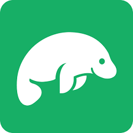

Case Study Movie App "GreenScreen"
GreenScreen is a full-stack web app, which provides users with information about movies addressing climate change. they can view information about the plot, directors and genres. also, they can create an account with their personal data and a list of favorite movies.
Objective
I developed this Movie application as part of my Full-Stack Web Development Course at CareerFoundry. My goal was to get some hands-on experience with express, node.js, relational and non-relational databases as well as to learn how to implement a frontend framework like React. I found the choice of the MERN stack very straight-forward for a beginner, because my prior basic knowledge of JavaScript allowed me to do frontend as well as backend.

Implementation of the server-side

I started out to I built a RESTful API with Node.js and Express. The data are stored in the non-relational database MongoDB.
I created the database with CRUD operations. The database holds two collections, "movies" and "users", which
can be accessed via commonly used HTTP methods (GET, POST, PUT, DELETE). I documented the endpoints using
Swagger. Finally, I deployed the database to MongoDBAtlas (DBaaS) and HEROKU (PaaS).
Creation of the database
After deciding on movies I wanted to showcase in my database, I built and populated the database MongoDB. First I created a database schema diagram to sketch the structure of the database. I decided on two collections (movies and users), which contained ten movies documents and five user documents. I also included embedded documents for the keys "genre" and "director" (to display information on genre and director of the movie on the client-side).

Tools that helped me build the database
- Mongo Shell - to create the database with CRUD operations
- Studio3T - to facilitate in the creation of the database
- Postman - to test the correct implementation of the endpoints
- Mongoose - to define and build database models and connect MongoDB with REST API
Implementation of data security
I set up data validation in the backend in order to receive it in the frontend and display the errors to the user, when building the client-side. On the client-side, it was also necessary to store the JWT token for authenticated users and send it alongside each request to the server to make sure they can access the different views of the website. This was done using axios and local storage.

tools I used to implement data security
- Passport - to implement basic HTTP authentication and generate JWT token
- Bcrypt - for Password hashing
- Express-Validator - for data input validation
other security measures
Adjust Environment variable to hide Connection URI
implement CORS, set to allow for all origins
Implementation of the client-side
Afterwards I built the client-side using React, Redux and Bootstrap to complement the existing server-side code. The single-page-application is a responsive website with routing, interactions and several interface views.
The interface views were developed based on user stories.
User stories
"As a user, I want to be able to access information on movies, directors, and genres
so that I can learn more about movies I have watched or am interested in!"
"As a user, I want to be able to create a profile,
so that I can save data about my favorite movies!"
Interface views
The users can register and are then redirected to a login page. If successful, they see a list of movies, which they can filter by movie title and then click to see more details (full plot, link to genre definition and director biography). The user can save individual movies to a favorites list in his personal profile


State management with Redux

Before starting with the implementation of Redux I created an architectural diagram to visualize which states I wanted to manage from a central container. I decided on the state of the movie list as well as the filtering of the movies by title, since that otherwise required the data to be loaded from the database at every request and would have slowed down performance.
My resume: It is a lot of boilerplate code for an application, which would not necessarily have needed it for the current complexity. Since Redux was the first library to introduce this store-system, it was good to try it out.
Deployment to Netlify and Heroku
Since Netlify and Heroku are both Platform as a Service (PaaS) provider, I wanted to see how the deployment process would differ. Netlify is focused on hosting static websites, Heroku hosting dynamic, server side rendered websites and apps.
After deployment to Netlify the Profile View did not open at all, reloading of other pages lead to a 404 error.
Following a lengthy trial-and-error, I wrote a netlify.toml file and specified build command, publish folder and wrote redirects for all routes. It finally worked.
My learning is that parcel and netlify lead to conflicts. Also, deployment on Heroku is more straightforward - I also deployed there, just to check, if it would work.
Challenges and Learnings
Creating the movie application from backend to frontend from scratch was quite a task. But I enjoyed to not just consume a third-party API and start with the frontend like in previous projects (Pokemon App), but to experience the process and challenges of creating everything from scratch.
I have learned an immense amount in this project. It starts with the fact that it helps to be familiar with the basic design principles like separation of concerns, YAGNI etc., especially for such large projects. Otherwise, you quickly get bogged down.
... from using middleware to aid in the development process
Even though not a requirement of the project, I installed an error handler to aid me in realizing errors during development. Also, I installed nodemon, in order to eliminate the step of having to restart node everytime I change the code. Thus making the development process a little more fluent.
... from using React
Since this was the first project I implemented using React, I - at first - did not feel as confident with the concepts of components, passing of props and state. That's why parallel to working on this Project I worked through an 11-hour-course on React on Scrimba, to better understand the basics. It helped me immensely and even gave me some nice ideas on custom CSS I wanted to implement - like a badge to display the movie genre on each movie poster.
... from breaking changes
Something, that happened to me at every turn of this project, was that I wanted to implement a framework, library or middleware as suggested by CareerFoundry, but found that a certain version was deprecated, that the change was actually a major one (breaking change). For node.js the most recent version led to errors in deployment, for React and Redux it was the opposite, the older versions did lead to problems. In 2021 React 18 introduced a new root API, namely ReactDOM.createRoot. This means that one needs to replace render with createRoot. The same was true for Redux. At first, I wanted to implement Actions, Reducers and Store. My IDE told me, that createStore() was recently deprecated, that I could import Legacy_createStore, but it was advised to use configureStore() instead. Since this approach was not as well documented yet, I read and listened to many tutorials trying to find the best combination for the new methods.
... from installing Homebrew
Installing MongoDB posed quite a task, because on a Mac it involved installing the package manager Homebrew. I found out that in order to successfully install Homebrew, you need macOS Mojave (10.14) (or higher), a 64-bit Intel CPU or Apple Silicon CPU (M1), CLT for Xcode and a Bourne-compatible shell for installation. Since I was working on an older version, homebrew kept throwing a lot of errors. I will probably cringe for quite a while when hearing "Homebrew", because installing it sent my CPU load through the roof and crippled my computer for one whole day.
What I learned? The only solution was doing a backup and using a MacBook from 2019 with a better machine, which could meet the above requirements.
Also, avoid installing with Homebrew, use another database than MongoDB, if possible. And, do the installation overnight and not in the morning when expecting to have a productive day.
... from building a database
Furthermore, it was intriguing to first build the database in a relational way and later with the final solution, the non-relational database MongoDB, just to experience the pros and cons. It inspired me to do another project building the backend of a children's coloring application with postgreSQL, just to get some more hands-on experience (Coloring Pic API).
... from using Swagger as documentation tool
I already knew that each middleware comes with its pitfalls. But I decided to use Swagger, because I had seen it listed in job ads as the standard tool. In addition, I liked the appealing graphic result as well as the possibility to incorporate information about input examples and error messages. Using swagger for "automatic" documentation and even being able to test the endpoints with it, was very satisfying. But, boy, it is unforgiving concerning indentation and syntax errors. I learned to switch to the online editor and not dare to try writing the Yaml file without it.
... from using Bootstrap
I know now why Bootstrap should not be used as a substitute for custom CSS. It is very difficult to customize and one has to be able to simply be content with the way some template looks (!which I am not able to) and to not try to tweak it with custom CSS juuuust a little (!which I did). It is better for quick mockups in my eyes.
Credits
Role: Developer
Tutor: Adam Pagels
Mentor: Bianca Trif